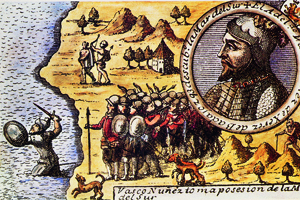
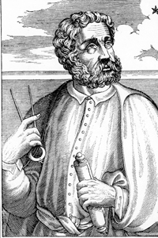
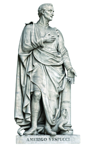

Lezione 10  Le Scoperte Geografiche
Le Scoperte Geografiche

-
210
420
-
275
170
-
470
245
-
300
245
-
350
295
-
390
275
SPAGNA
Antonio Pigafetta, uno dei sopravvissuti al viaggio, descrive l’impresa in una Relazione del primo viaggio intorno al mondo.
CHAPAS
Tra molti scopritori di nuove terre, lo spagnolo Vasco Nuñez de Balboa scopre invece un nuovo mare: nel 1513, attraversando l’istmo di Panama si trova di fronte l’immensa e fino ad allora sconosciuta distesa dell’oceano Pacifico. Quest’incisione acquerellata del Cinquecento lo raffigura con toni epici mentre rivendica alla Spagna il possesso del “Mar del Sur”.
STRETTO DI MAGELLANO
Il primo a compiere la circumnavigazione del globo è il portoghese Ferdinando Magellano, qui ritratto in un’incisione cinquecentesca dall’opera Vite degli uomini illustri di André Thevet. Lo stretto che da lui prende il nome congiunge gli oceani Atlantico e Pacifico. Magellano dà il nome all’oceano Pacifico. Magellano muore nelle Filippine, ucciso in uno scontro con indigeni.
COLOMBIA
Il continente americano deve il suo nome al fiorentino Amerigo Vespucci, che nei quattro viaggi compiuti oltreoceano capisce di non avere a che fare con le “Indie” di cui parlava Colombo, ma con una terra fino ad allora sconosciuta. Questa statua viene scolpita da Gaetano Grazzini a metà dell’Ottocento per essere collocata nel Loggiato degli Uffizi in una galleria di uomini illustri.CABRAL
1500-1503: Scoperta e colonizzazione portoghese del Brasile da parte di Pedro Cabral. I portoghesi costruiscono successivamente 12 città portuali fortificate e intraprendono spedizioni nell’interno, creando insediamenti stabili di coloni.AMERICA
1506: Prima menzione del termine “America” per indicare il Nuovo Mondo.